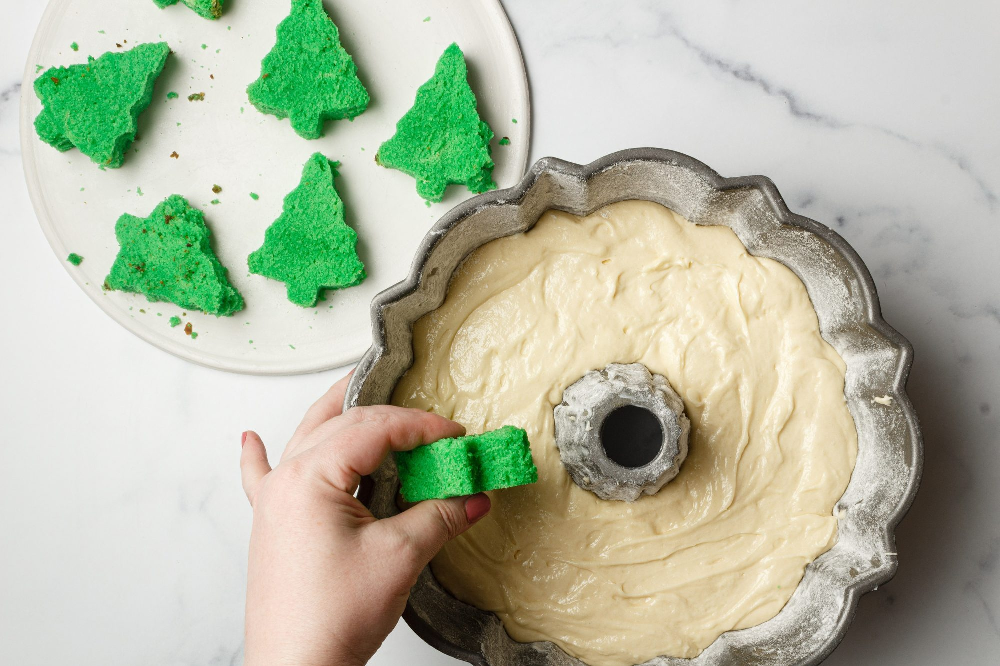
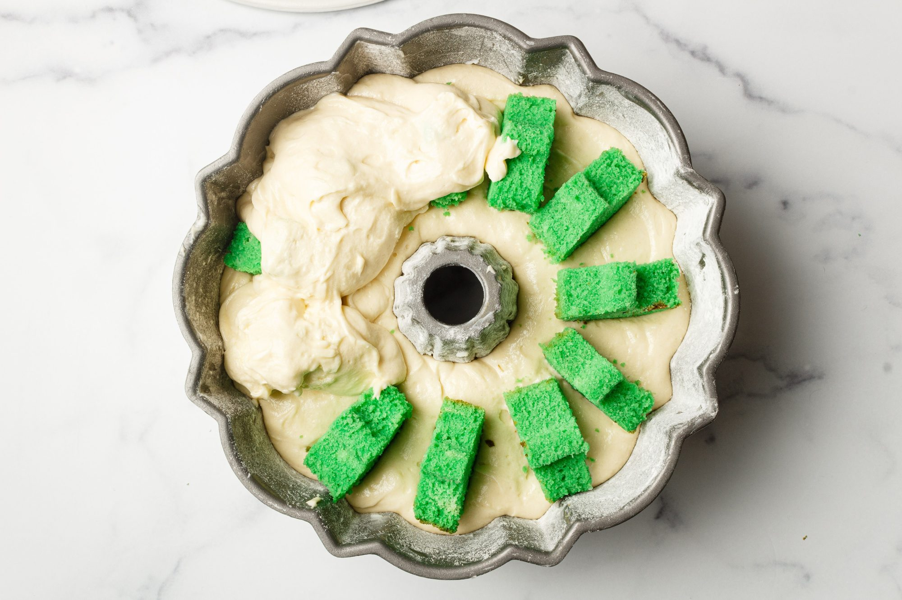
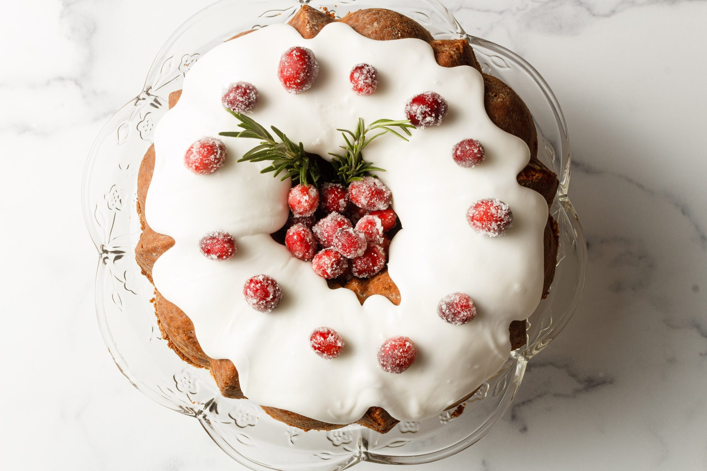

Christmas Bundt Cake

Description
A great holiday ham glaze needs to have three things: wonderful flavor,
gorgeous, shiny appearance, and a crispy, crackling crust you can hear
across the room. I'm happy to report this easy-to-make glaze has all those
things in abundance.
Ingredients
- Pound cake recipe (2 separate batches: one tinted green
and one untinted)
- Green food coloring
- 2 loaf pans (I used 8½ x 4½ x 2½)
- Cooling rack
- Christmas tree cookie cutter (should be shorter than Bundt cake pan)
- Baking sheet
- 1 fluted Bundt cake pan
- Spatula for spreading batter
- Icing recipe
- Zip-top bag or piping bag with large round tip
- Sugared cranberries (optional decoration)
- Sage leaves or rosemary sprigs (optional decoration)
Steps
Making the christmas tree
- Make one batch of pound cake batter and add green food coloring.
I used 2 teaspoons of liquid green food coloring to get a vivid
bright green color.
- Grease and flour two loaf pans and evenly split the green
pound cake between them.
- Bake according to the pound cake directions.
- Immediately turn out the green loaf cakes onto a cooling rack and cool
for 1–2 hours.
- Cut cooled cake into slices as thick as your cookie cutter. I ended up
getting about 7 slices from each loaf.
- Use a Christmas tree cookie cutter to cut out a Christmas tree from each
slice of cake.
- Immediately turn out the green loaf cakes onto a cooling rack and cool
for 1–2 hours.
- Place all the Christmas tree pieces onto a baking sheet and chill in
the freezer for about 5-10 minutes. This prepares them for our next steps.
Note: You will have a lot of cake scraps leftover, and a great way to use them
is to make cake pops! Red candy melts would make a perfect holiday coating.
Assembling the Bundt Cake
- Grease and flour your Bundt cake pan. Make a second batch of pound cake batter,
but do not tint it.
- Add about ⅔ of the batter to the prepared Bundt cake pan.
- Carefully add the Christmas trees, being sure to put them into the
batter upside down, as seen below, so when the cake is turned out of the
pan, the trees will be standing the right way up.

- After all the Christmas tree cakes are inserted, very carefully add
the rest of the batter on top. It's okay if some green peeks through
(as seen on the left side of the image below). The batter will rise
as it cooks.

- Bake following recipe instructions in a preheated 325 degrees F
(165 degrees C) oven for about 1 hour and 25 minutes until a toothpick
inserted into the center comes out clean and the cake is just starting
to pull away from the sides of the pan.
- Carefully turn out the cake onto a cooling rack as soon as it comes out of the oven.
- Let it rest for 2–3 hours until it's completely cool to the touch.
Decorating the Cake

- Make the icing (see recipe link above).
- Scoop icing into a zip-top bag and cut off a large corner OR scoop
icing into an piping bag fitted with a large round tip. Pipe icing
slowly over the top of the cooled cake, letting it drip partway down
the sides. Note: Do not pour the icing; pipe it as directed.
- While your icing is still sticky, add any decorations you like.
Sprinkles and red hots could be a very fun and festive decoration.
Or you can go more rustic and do sugared cranberries and rosemary
springs as I did.
Enjoy the ooohs and aaahs from family and friends as they slice
into this festive surprise cake!